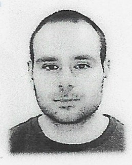

<!DOCTYPE html>
<html>
    <meta charset="UTF-8">
    <title>Resume</title>
</html>

<body>
    <h1>André Santos</h1>
    

    <h2>Contact</h2>
    <p>You can find my contact <a href="./contact.html">here</a></p>

    <h2>Activities and Interests</h2>
    <p>You can find this topic <a href="./activities_interests.html">here</a></p>

    <hr>

    <h2>Summary</h2>

    <p>I consider myself empathetic, thoughtful, calm, diligent and helpful.</p>

    <hr>

    <h2>Work Experience</h2>
    <ul>
        <li>Internship in Tiagos Clinica - physiotherapy clinic in Setúbal</li>
        <li>Internship in computer center in Autonomous University of Lisbon</li>
        <li>Internship in AFB Linguas (Editing and upload of images and sounds; experience with moodle plataform)</li>
    </ul>
    
    <hr>

    <h2>Education</h2>
    <ul>
        <li>Presently taking "The Complete 2024 Web Development Botcamp" and "Python Bootcamp" courses on Udemy</li>
        <li>Assistant Technician of Physiotherapy course on SA Formação</li>
            <ul>
                <li>Start date: September 2022</li>
                <li>End date: March 2023</li>
                <li>Internship ended on June 2023</li>
            </ul>

        <li>Attendance on the Technical Specialist in Physical Exercise Course (CET)</li>
            <ul>
                <li>Teaching Place: MANZ Formação</li>
                <li>Course: Técnico Especialista em Exercício Fisico</li>
                <li>Start date: November 2020</li>
            </ul>

        <li>Attendance in the degree in Nutrition Sciences</li>
            <ul>
                <li>University: Autonomous University of Lisbon</li>
                <li>Course: Nutrition Sciences</li>
                <li>Start date: September 2020</li>
            </ul>

        <li>Degree in Tradicional Chinese Medicine (first year complete)</li>
            <ul>
                <li>University: Universidade de Medicina Chinesa (UMC)</li>
                <li>Course: Tradicional Chinese Medicine</li>
                <li>Start date: September 2018</li>
            </ul>

        <li>Attendance in the degree in Sport and Exercise Sciences</li>
            <ul>
                <li>University: Wrexham Glyndwr University</li>
                <li>Course: Sport and Exercise Sciences</li>
                <li>Start date_ September 2015</li>
            </ul>

        <li>Professional course of Computer Programmer</li>
            <ul>
                <li>University: Autonomous University of Lisbon</li>
                <li>Course: Computer Programmer</li>
                <li>Academic Level: Level 4 of Qualification of the National Qualification Framework</li>
                <li>Start date: 2012</li>
                <li>End date: 2015</li>
            </ul>
        <li>Secondary Education in the area of Sciences and Technologies</li>
            <ul>
                <li>School: Secundária Fernão Mendes Pinto</li>
                <li>Course: Ciências e técnologias (Sciences and Technologies)</li>
                <li>Academic Level: 12th year</li>
                <li>End date: 2012</li>
            </ul>

    </ul>

    <hr>

    <h2>Skills</h2>
    <ul>
        <li>Strong skills of assimilation</li>
        <li>Ability to collaborate in team</li>
        <li>Balanced under pressure</li>
        <li>Microsoft Office applications set</li>
    </ul>

    <footer>
        <p>© 2024 André Santos. All rights reserved.</p>
    </footer>


</body>